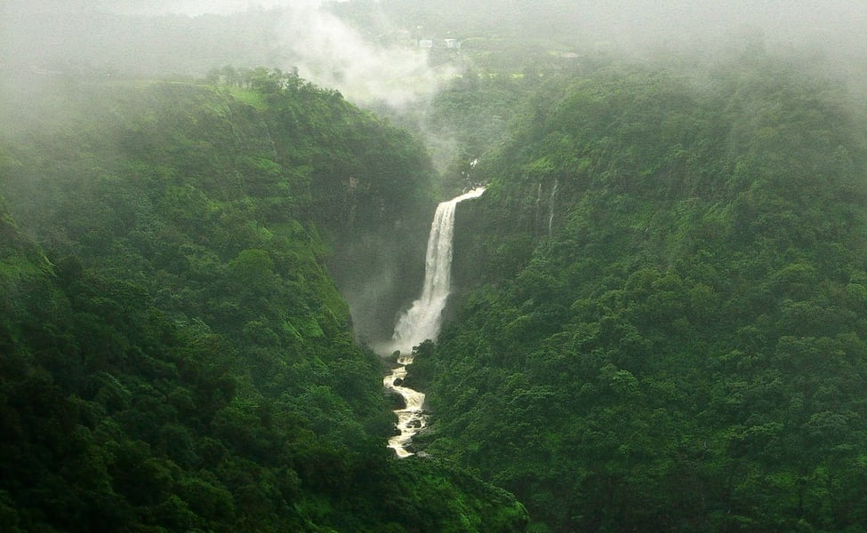
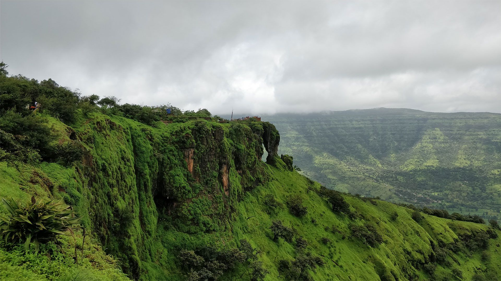

<div class="container">
  <div class="row">
    <div class="col-md-12">

      <body>
        <div class="card bg-dark text-white">
          
          <div class="card-img-overlay">
            <h5 class="card-title">Welcome to the Hill-station side of Maharashtra</h5>
            <p class="card-text">Explore and Enjoy the Amazing and Mesmarizing views of our beautiful Hill-Stations.</p>
          </div>
        </div>
      </body>
      <div class="row row-cols-1 row-cols-md-3 g-4">
        <div class="col">
          <div class="card mt-4">
            
            <div class="card-body">
              <h5 class="card-title">Mahabaleshwar</h5>
              <p class="card-text"> At a distance of 54 km from Satara, 123 km from Pune, 177 km from Kolhapur, 243 km
                from Mumbai, and
                377 km from Panaji, Mahabaleshwar is a
                scenic hill town in Satara district of Maharashtra..</p>
              <a href="mahabaleshwar" class="btn btn-primary">know More!</a>
            </div>
          </div>
        </div>
        <div class="col">
          <div class="card mt-4">
            
            <div class="card-body">
              <h5 class="card-title">Matheran</h5>
              <p class="card-text"> At a distance of 94 km from Mumbai, 56 km from Lonavala, and 122 km from Pune,
                Matheran is a small
                hill station in the Raigad district of Maharashtra.
                Situated at an altitude of 800 m in the Western Ghats range.</p>
              <a href="matheran" class="btn btn-primary">know More!</a>
            </div>
          </div>
        </div>
        <div class="col">
          <div class="card mt-4">
            
            <div class="card-body">
              <h5 class="card-title">Bhandara</h5>
              <p class="card-text">At a distance of 70 km from Nashik, 104 km from Shirdi, 157 km from Pune and 172 km
                from Mumbai,
                Bhandardara is a small hill station and a
                holiday resort located in Ahmednagar district of Maharashtra.</p>
              <a href="bhandara" class="btn btn-primary">know More!</a>
            </div>
          </div>
        </div>
        <div class="col">
          <div class="card mt-4">
            
            <div class="card-body">
              <h5 class="card-title">Lonavla</h5>
              <p class="card-text"> At a distance of 67 km from Pune, 95 km from Mumbai, and 282 km from Aurangabad,
                Lonavala is a
                beautiful hill station in the Pune district of Maharashtra.</p>
              <a href="lonavla" class="btn btn-primary">know More!</a>
            </div>
          </div>
        </div>
        <div class="col">
          <div class="card mt-4">
            
            <div class="card-body">
              <h5 class="card-title">Pachgani</h5>
              <p class="card-text"> At a distance of 18 km from Mahabaleshwar, 48 km from Satara, 104 km from Pune, and
                254 km from
                Mumbai, Panchgani, also called Paachgani,
                is a famous hill station and municipal council in
                Satara district of Maharashtra.</p>
              <a href="pachgani" class="btn btn-primary">know More!</a>
            </div>
          </div>
        </div>
        <div class="col">
          <div class="card mt-4">
            
            <div class="card-body">
              <h5 class="card-title">Card title</h5>
              <p class="card-text">This is a longer card with supporting text below as a natural lead-in to additional
                content. This content is a little bit longer.</p>
              <a href="" class="btn btn-primary">know More!</a>
            </div>
          </div>
        </div>
      </div>
    </div>
  </div>
</div>